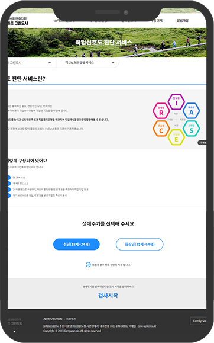
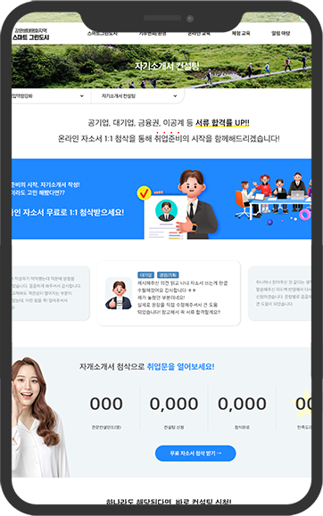
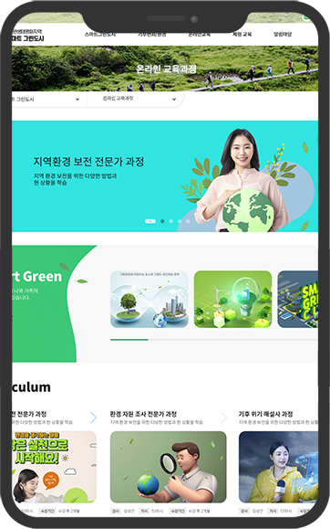

취업 고민, 이제는 전문 직업상담사 와 함께 상의해보세요!
상담 신청하기 →구직자, 재직자를 위한 프리미엄 상담서비스
어려운 취업준비
1:1 진로 및 취업상담으로
어려움 극복
목표 진로 설정
나의 성향 및 적성 파악,
맞춤 직무 탐색
취업역량 향상
자기소개서 컨설팅, 면접 컨설팅
연계 상담
입사지원 상담
채용공고, 기업분석, 공고내용
분석 결과 상담
직장 적응 상담
노무, 이직, 직장생활적응 등
취업자 고충 상담
실제 이용자들의 이야기를 확인해 보세요.
취업상담
취업난에 대한 부담으로 심리적 압박감이 심했는데, 공감과 정신적인 지지로 편하게 상담에 임할 수 있었습니다.
취업상담
취업난에 대한 부담으로 심리적 압박감이 심했는데, 공감과 정신적인 지지로 편하게 상담에 임할 수 있었습니다.
취업상담
취업난에 대한 부담으로 심리적 압박감이 심했는데, 공감과 정신적인 지지로 편하게 상담에 임할 수 있었습니다.
취업상담
취업난에 대한 부담으로 심리적 압박감이
진로상담
취업난에 대한 부담으로 심리적 압박감이 심했는데, 공감과 정신적인 지지로 편하게 상담에 임할 수 있었습니다.
진로상담
취업난에 대한 부담으로 심리적 압박감이 심했는데, 공감과 정신적인 지지로 편하게 상담에 임할 수 있었습니다.
진로상담
취업난에 대한 부담으로 심리적 압박감이 심했는데, 공감과 정신적인 지지로 편하게 상담에 임할 수 있었습니다.
진로상담
취업난에 대한 부담으로 심리적 압박감이 심했는데, 공감과 정신적인 지지로 편하게 상담에 임할 수 있었습니다.
취업, 진로 상담 이후 역량 강화를 위한 연계과정입니다.
직업선호도검사
자기소개서 컨설팅
온라인 교육과정
